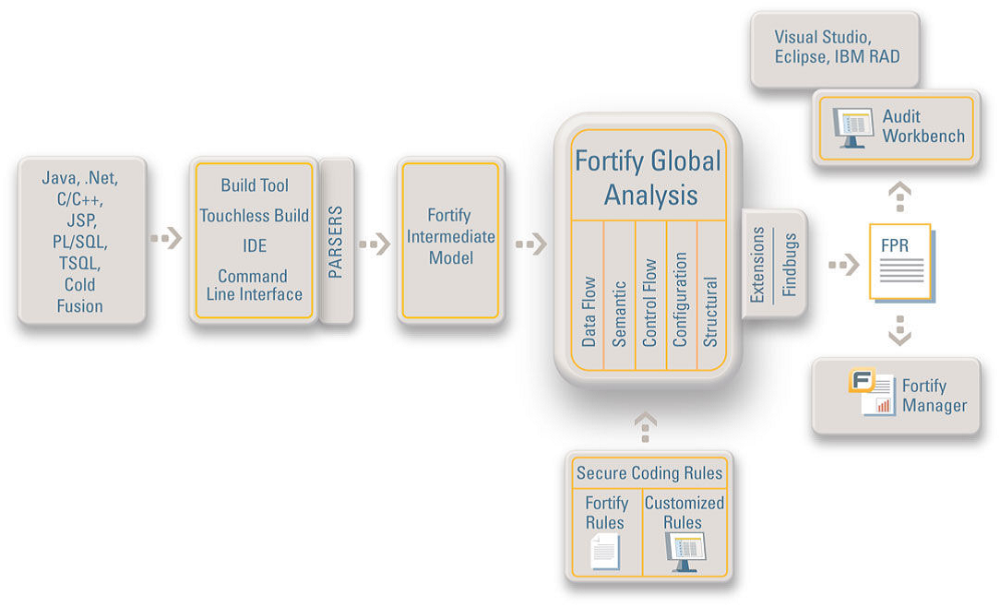
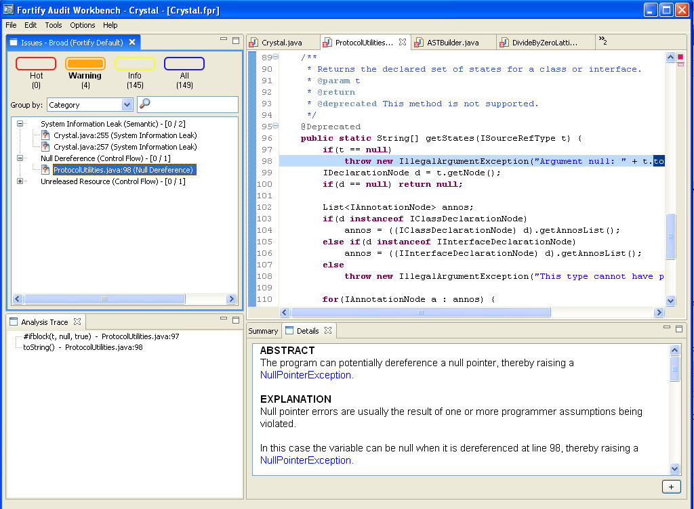

HP Fortify SCA
The Fortify SCA tool attempts to protect systems from security flaws in business-critical software applications. Fortify SCA drives down cost and risk by automating and enhancing key software audit, development, testing and deployment processes. Unlike traditional network security, Fortify SCA strengthens the software applications themselves so that hackers and malicious insiders cannot access vital assets or disrupt business processes.
In addition to the Fortify SCA tool some of their other products are as follows: Fortify Tracer - the first and only automated solution that makes Black Box security testing actionable and measurable, Fortify Tester - the first black box security testing plug-in for Microsoft Visual Studio, Fortify Defender – the first and only intrusion prevention software solution for web applications already in deployment, and Fortify Manager - the definitive software security risk management dashboard.
The tool that we have evaluated is the Fortify Source Code Analyzer (Fortify SCA) created by Fortify Software. Fortify software is a software security vendor of choice of government and Fortune 500 companies in a wide variety of industries. They provide products that identify and remediate security vulnerabilities in software in order to mitigate enterprise security risks.
Languages/Platform supported
Fortify SCA supports a wide variety of languages, frameworks and operating systems.
Languages: ASP.NET, C/C++, C#, ColdFusion, Java, JSP, PL/SQL, T-SQL, XML, VB.NET and other .NET languages.
Platforms: Windows, Solaris, Linux, Mac OS X, HP-UX, AIX.
Frameworks: J2EE/EJB, Struts, Hibernate.
IDEs: Microsoft Visual Studio, Eclipse, Web Sphere Application Developer, IBM Rational Application Developer
How it Works
Fortify SCA is a static analysis tool and it processes code in a manner similar to a code compiler. It uses a build tool that runs on a source code file or set of files and converts it into an intermediate model that is optimized for security analysis by Fortify. This model is put through a series of analyzers (Data flow, Semantic, Control Flow, Configuration, and Structural). Fortify SCA also uses Fortify Secure Coding Rule Packs to analyze the code base for violations of secure coding practices. Fortify Rules Builder allows to extend and expand analysis capabilities to include custom rules as well. The results can be viewed in a number of ways using the Audit Workbench and the Fortify Manager.

Capabilities/Features
Fortify SCA is used to find and fix following software vulnerabilities at the root cause: Buffer
Overflow, Command Injection, Cross-Site Scripting, Denial of Service, Format String, Integer Overflow, Log Forging, Password, Management, Path Manipulation, Privacy Violation, Race Conditions, Session Fixation, SQL Injection, System Information Leak, and Unreleased Resource. It sorts, filters, prioritizes and categorizes the issues found in various forms for easy viewing and analysis through the Audit Workbench and Fortify Manager. The results can also be exported as a report in formats such as html and xml. The SCA tool supports integration with black box security testers such as Watchfire’s Appscan and it also supports integration with Findbugs for central security and quality issue reporting.
TOOL AND EXPERIMENTS SETUP
Tool Setup
The SCA tool comes in three editions: Enterprise, Team, and Developer. We used the Team Edition which is intended for smaller organizations, and consists of Fortify SCA, Fortify Audit Workbench, and Fortify Rules Builder. We believe this edition will be the most relevant and interesting to other MSE and MSIT students because the majority of studio and practicum projects are being done in a Windows environment with small teams. The tool was downloaded with the evaluation license from www.fortifysoftware.com.
How to Use
An analysis can be performed with the Fortify SCA tool in two steps:
Use the command line to run the source analyzer on the project source files and obtain a .fpr file.
Use the Audit workbench or Fortify Manager on the .fpr file to explore the results of the analysis.
The first step in performing an analysis involves running a series of commands at the command line prompt to build the source files. For Java projects, the classpath and the source folder or file must be provided. For C/C++ projects, a makefile is required. Once the build is successful, a .fpr file is generated on which we ran the Audit Workbench to analyze the results.
The screenshot shows the Fortify Audit workbench used to analyze the Crystal code base:

BENEFITS AND DRAWBACKS
Benefits
The Fortify SCA tool provides powerful analysis techniques, including patent pending multi-tier data flow analysis and interactive results viewing. It helps prioritize security risks and thus helps to bring high risk vulnerabilities to the forefront.
Fortify SCA efficiently processes large, complex code bases and presents discovered security issues in a well categorized form that makes reporting and remediation significantly faster.
Fortify SCA uses the knowledge base of secure coding guidelines and thus brings required expertise and consistency to developers and allows security experts to leverage their knowledge across more projects.
The tool provides support for multiple languages and platforms.
The tool is easy to setup and does not require any extra work other than building the source files.
Drawbacks
The SCA tool cannot catch design intentions or analyze the existing design for soundness.
There are some usability issues in the build phase of using the tool since this has to be performed through the command line and with the availability of makefiles in some instances.
Fortify SCA suffers from what is called the “black box problem”. For reactive applications and heterogeneous systems, execution does not always take place in available application code. For instance, in reaction to a mouse click, a reactive application can start executing in kernel code to pass the event over and around the operating system. This part of its execution can rarely be analyzed and therefore, static analysis tools can hardly determine what type of data comes out of these calls.
Fortify SCA has issues with discovering bugs from aliasing and considering method calls (it does not cover all execution paths).
|